Hello Cadet! Welcome to the armory! Here you will spend countelss minutes creating loadouts to help you survive the horrific hordes of dissident scum.
For Super Earth, and Democracy
Primary Weapons:
The Liberator!
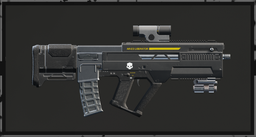
The Standard rifle issued to all Helldivers, with light penetration is struggles to damage armoured targets, however it boasts an impressive DPS (damage per second) and is quite powerful in the correct hands.
The Dilligence!
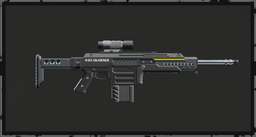
The Dilligence, a marksman rifle with light penetration, with high capacity and relativly high damage, it can be used quite effectivly when aiming exclusivly at weak-spots.
The Breaker!
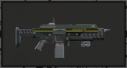
The Breaker, a magazine fed automatic shotgun, having light penetration bearly fazes this poweful weapon, quite effective aginst large groups of unarmoured enemies.
The Liberator Penetrator!
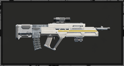
The Liberator Penetrator, a modified Liberator rifle. With a slower fire-rate and lower damage it can seem like a mediocre weapon, however, it comes with medium armour penetration, allowing more enemies to be damaged by it.
The Slugger!
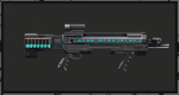
The Slugger, a modified punisher shotgun (not in this guide), it has been modified to shoot slug rounds, turning it from a shotgun to something akin to a marksman rifle, with medium penetration it can be used quite effectivly against single, armoured targets.
The Dilligence Counter Sniper!
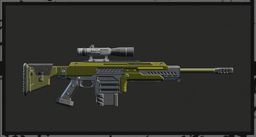
The Dilligence Counter Sniper, a powerful marksman rifle, with high damage and medium penetration, it can take down most opponents with just a few shots.
All following weapons are from prenium warbonds, you will have to buy those for 1000 Super Credits (they can be found in mission for 100% free)
The Adjudicator!
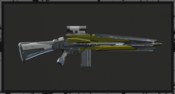
The Adjudicator, a powerful medium penetrating assault rifle, it has slightly better damage than the Liberator Penetrator
The Crossbow!
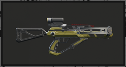
The Crossbow, a fully automatically priming crossbow shich shoots magazine-fed exploding bolts, can close bug-holes, automaton fabricators and destroy Illuminate ships, a very versitile tool good in any sitiuation.
The Eruptor!
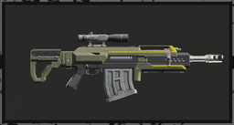
the Eruptor, a poweful heavy-penetrating explosive sniper rifle, one of the best weapon in the game, it does all that the crossbow does, but at a bigger scale, and with the downside of needing to be manually cocked between shots.
The Breaker Incindiary!
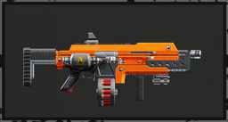
The Breaker Incindiary, a fiery modification to the breaker, with incindiary rounds, it is very good on the Terminid front.
The Cookout!
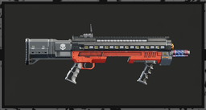
The Cookout, another incindiary modification to a weapon, with high stagger rates and good fire damage, it is extremly powerful on the Terminid front.
The Double Edged Scicle!
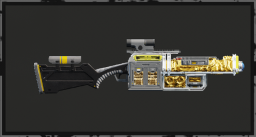
The Double Edged Scicle, a very powerful laser rifle, as it heats up its penetration goes up, and it can go all the way up to heavy penetration! But the heat can damage you, so be careful!
The Deadeye!
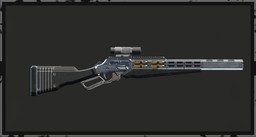
The Deadeye, a powerful medium penetrating marksman rifle, fast, reliable and high damaging, it is ideal for Automaton missions.
Secondary Weapons:
The Senator!
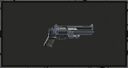
The Senator! Your steriotipical revolver, this however does not mean it is bad! The senator boasts heavy armour penetration and is ideal for Automaton Missions!
The Talon!
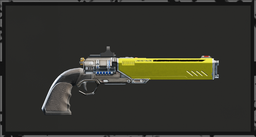
The Talon, a powerful medium penetrating laser revolver. As it is a laser weapon, it theoretically has infinite ammo, that combined with its high damage makes it good on all fronts, especially the Terminid front.
The Crisper!
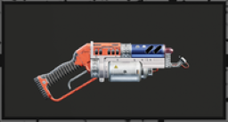
The Crisper, a mini flamethrower, very good at setting terrain ablaze, the walls of fire that this weapon can create makes it perfect for both the Illuminate and Terminid fronts.
Throwables:
The Dynamite!
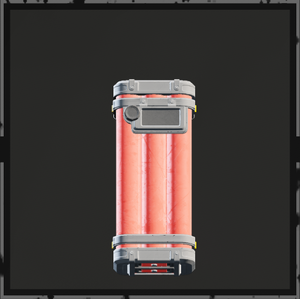
The Dynamite grenade, highly destructive in a large radius and with a programmable fuze time, very good for the Terminids.
The Gas Grenade!
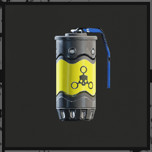
The Gas Grenade, a versitile support tool, confuses enemies and can destroy spawners, good on all fronts.
The Pyrotech Grenade!
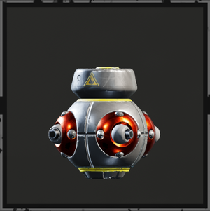
The Pyrotech grenade was originally made as a firework, however, its blazing circle if fire was added to our arsenal, and is quite effective against the Illuminate.
Thermite.
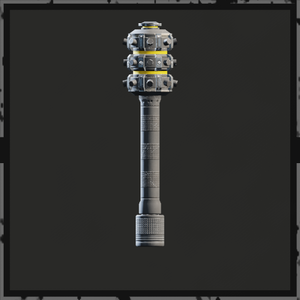
Thermite, the single best throwable in the game. Kills all heavy enemies in 1 - 2 of them. S-tier on all fronts.